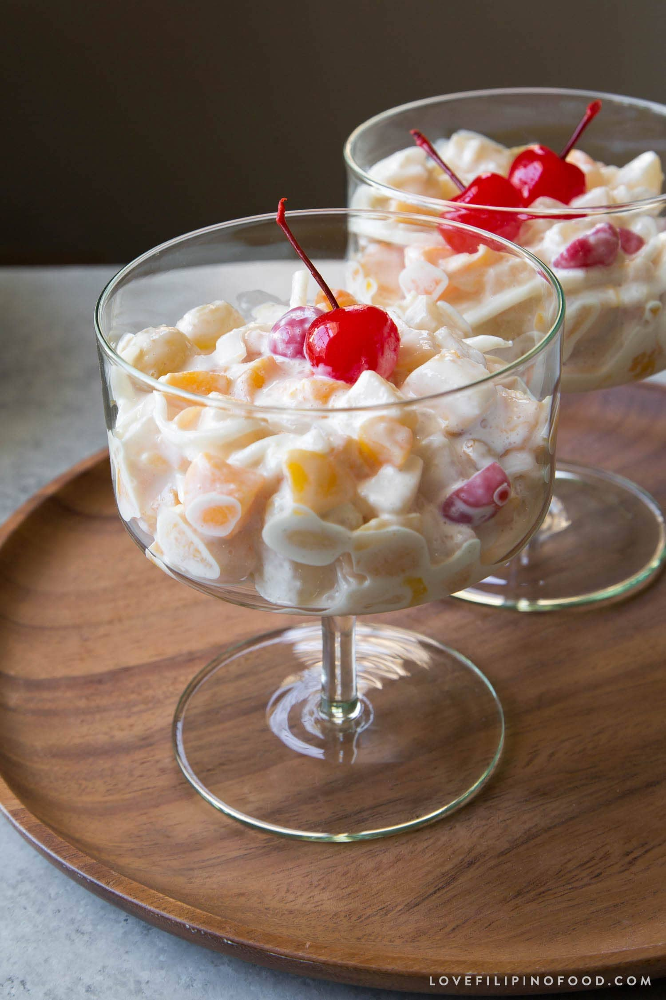
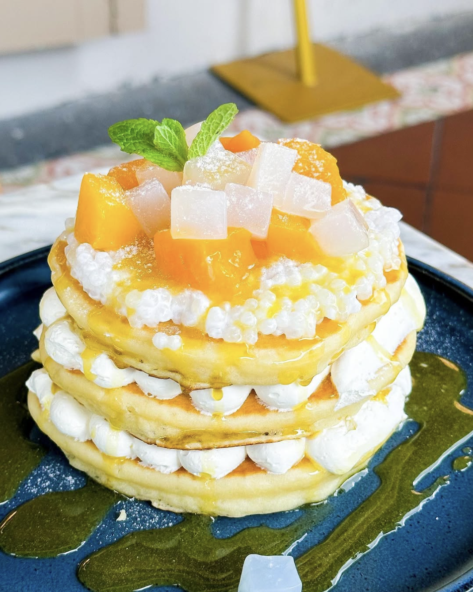
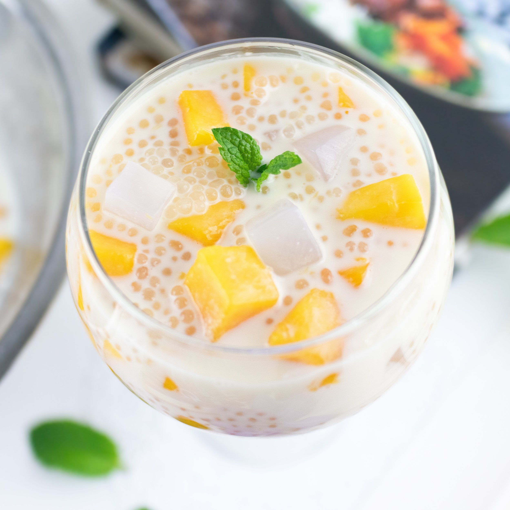
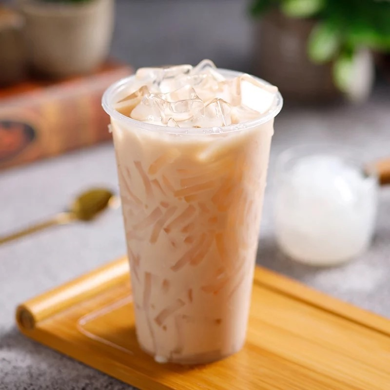

Nata de coco, also marketed as coconut gel, is a chewy, translucent, jelly-like food produced by the fermentation of coconut water, which gels through the production of microbial cellulose by Komagataeibacter xylinus.
Originating in Ramon, Isabela, nata de coco was invented in 1949 by Teódula Kalaw África as an alternative to the traditional Filipino nata de piña made from pineapples. It is most commonly sweetened as a candy or dessert, and can accompany a variety of foods, including pickles, drinks, ice cream, puddings, and fruit cocktails.
History
Nata de coco was invented in 1949 by Teódula Kalaw África, a Filipino chemist working for the National Coconut Corporation (now the Philippine Coconut Authority). It was originally conceived as an alternative to nata de piña, another gel-like Filipino dessert produced since the 18th century. This was because though the demand was high, nata de piña was seasonal, as it relied on pineapple harvests from the declining piña fibre industry.
Production
Commercial production of nata de coco began in 1954, when the agency, renamed the Philippine Coconut Administration, opened a branch in Alaminos, Laguna and introduced the technology to local farmers. Nata de coco production was later optimized in the mid-1970s through the efforts of a team of microbiologists led by Priscilla C. Sánchez. In the 20th century, the demand for coconuts increased. Products from coconuts became a major export product of the Philippines, including nata de coco.
Nutrition
Nata de coco is mainly made from coconut water and so has a modest nutritional profile. One cup of it (118 grams) contains:
Calories109
Protein1g
Carbohydrates7g
It is often characterized as healthy since it contains dietary fiber to aid digestion while carrying fewer calories compared to other desserts, gram for gram.
Dessert
Nata de coco can be consumed on its own, but can also be used as an ingredient as well for many desserts:
-

Salad
-

Halo-Halo
-

Cake
-

Soft Drink
-

Yogurt
-

Bubble Tea